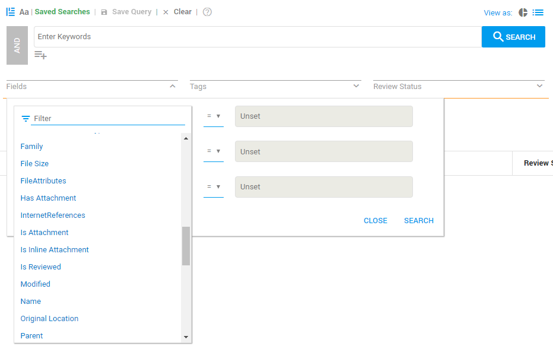

The IN operator allows you to find terms in fields added to the file (meta data).
|
Syntax |
Semantics |
Recommended Use |
|---|---|---|
|
|
Where a result of a query (a term, phrase or other query) can be found IN the field with the specified fieldname . Braces {} mark the start and end of the search within the field. |
Search your meta data and restrict the search to a specific area of a file. |
Example
|
Query |
Results |
Results Explained |
|---|---|---|
|
IN occupation{dentist} |
dentist |
The word 'dentist' is found in the field 'occupation'. |
|
IN age{>17} |
18, 19, or a higher number |
A number higher than 17 is found in the field 'age'. |
Instead of using this syntax, you can also use Fields search in the user interface:

See also—Field Filter